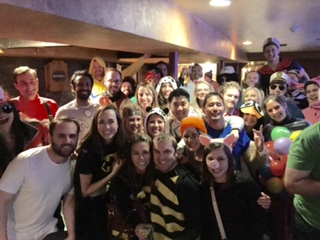
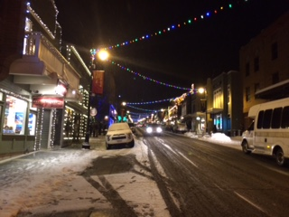
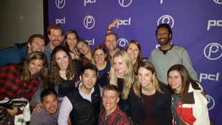

The Second Annual Kellogg Part-Time MBA trip was a great success this year! Forty-five students, alumni, and friends traveled to Park City, UT for a 3-day ski trip to forge new bonds between new and old students.
We arrived at Park City, UT at noon on Friday, 1/15/2015, and settled into our condo. Old Kellogg friends and new enjoyed some relaxing time in the hot tub, followed by a group dinner. After dinner, the costume party began and we danced the night away.
Costume Party
Main Street
After a day long of skiing, we had tapas at Le Bogata and went to a live show. We had such a blast, and got to know our peers and bond in an entirely new context.
Red Carpet photo
Another day on the slopes, and we .